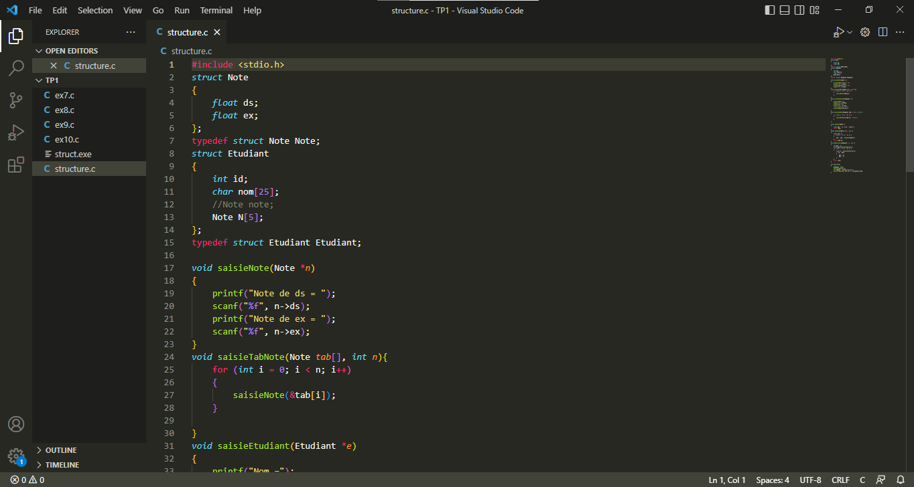
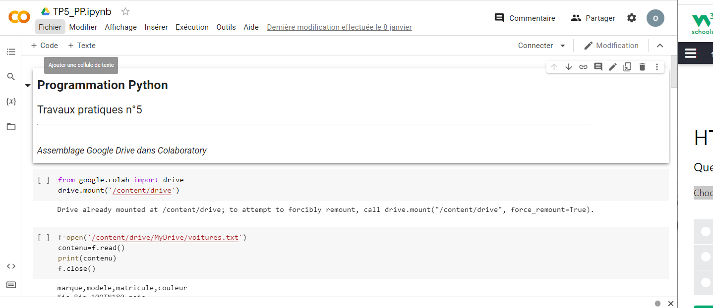
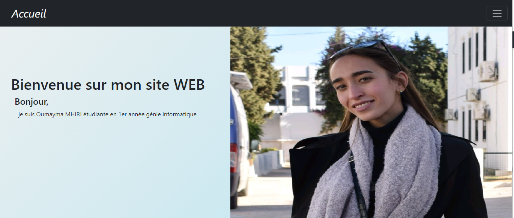
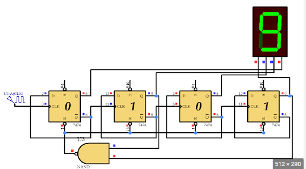
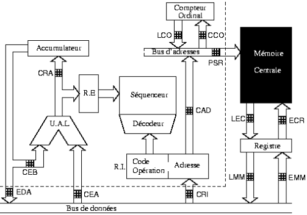
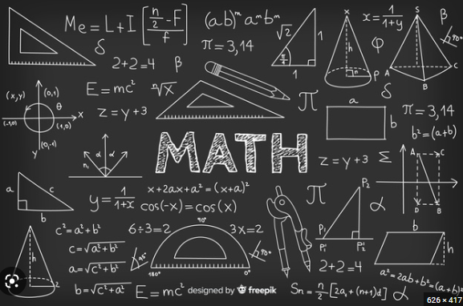
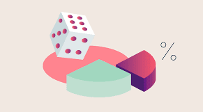

Création d’un site web personnel

Réalisation d'une maison intelligente

| Les matières étudiées au premier semestre de la première année de cycle d'ingénieur | |
|---|---|
| Nom de la matière | projet/TP/exercices |
| Algorithmique et programmation procédurale C |  |
| Programmation Python |  |
| Programmation Web |  Création d’un site web personnel |
| Bases de données: Préparation à la certification Oracle 1 | |
| Systèmes Logiques |  |
| Architectures des Ordinateurs | Réalisation d'une maison intelligente |
| Système d'Exploitation |  |
| Transmission de données | |
| Mathématiques pour l'ingénieur |  |
| Probabilité et Statistiques |  |